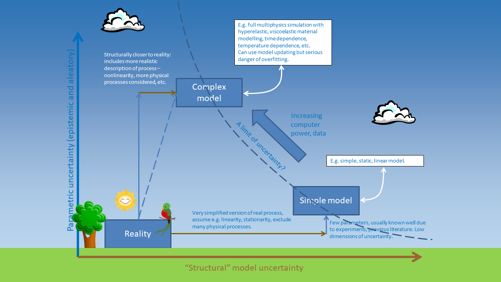

library(plotly)
x <- runif(20) %>% sort() # random numbers (sorted to avoid problems in plotting)
y <- 2*x + rnorm(20)*0.5 # create y and add noise
df <- data.frame(x, y)
fig <- plot_ly(data = df, x = ~x, y = ~y) # plot
fig
So far in my few posts in this blog I’ve been writing about indicators. Actually I only started working in indicators around 2015. I found that the topic suits me because it is a blend of statistics/data analysis and qualitative work (writing, conceptualising and so on), and I like things that are not too narrowly focused.
Before that (and still now) I was/am a researcher in sensitivity and uncertainty analysis. Uncertainty analysis is understanding how uncertainties in model inputs affect the results, and sensitivity analysis is a more detailed breakdown of which particular model inputs/assumptions are causing the most uncertainty, and by how much.
These topics, combined with some years of experience working in the European Commission, also led me to be generally interested in modelling. I had direct experience building engineering and biomechanical models in my PhD, and came across many different types of models in the Commission, often used for policy impact assessments.
What is a model?
First of all, what is a model? Well, as usual there are many ways to divide and classify things, but one distinction is:
Principle/process-driven models: these are models that are built based on understanding the physics or processes behind the system. A simple example is Hooke’s Law which describes how a spring extends under a given load. More complex examples are hydrological models and climate models. In all cases, the model is built based on some encoding of the physics or processes driving the system.
Data-driven models: in these models, the system is treated much like a black box. Instead, we use a set of measured system inputs and outputs, and try to build a statistical mapping between the two. A linear regression is a simple example, but more complex examples are Gaussian processes, neural networks, deep learning and so on. What they have in common is that the modelling simply tries to replicate the input/output relationship, rather than trying to model any particular physical process.
No doubt many people would dispute the nuances of those definitions, but I think that the core concept is solid. However, the two categories are not distinct, and in fact will overlap to some extent. At the end of the day, both categories are a system of equations, and both usually have to be calibrated or fitted in some way. This discussion could go on for a while so let’s leave it at that for now.
Elementary, my dear Occam
Occam’s Razor is one of those heuristics that seems to apply everywhere. According to Wikipedia, it can be defined as:
the problem-solving principle that “entities should not be multiplied without necessity”, or more simply, the simplest explanation is usually the right one.
What has this got to do with modelling? Well, everything points to the fact that the simplest model that explains the data/process is the best.
This idea is well-known in statistical modelling (i.e. category 2 of the taxonomy above). You might have heard of the “bias-variance trade off”: this is the idea that there is a balance to be struck between underfitting and overfitting a set of data. Underfitting means that the model is too simple to explain the data/process, whereas overfitting means the opposite: the model gives too much weight to individual observations, rather than focusing on the underlying process.
The general idea is that most of the time, when you are modelling data, you expect a relationship along the lines of:
\[ y = f(x) + \epsilon \] where \(y\) is the variable you want to model, \(x\) is the variable, or set of variables that explain \(y\), and \(\epsilon\) (which can also be a function of \(x\)) is a summary of other “things” that contribute to \(y\) but you are not explicitly trying to model. The “things” can errors due to measurement, but they can also be other variables that you are not able to measure, or you prefer not to include in this particular modelling exercise.
The point is that what you want to understand and isolate is \(f(x)\), not \(\epsilon\). If your model starts to include elements of \(\epsilon\), then you have a mix of the two quantities, and this makes it difficult/impossible to (a) understand the relationship between \(y\) and \(f(x)\), and (b) make predictions of \(y\) at unobserved values of \(x\). Occam’s Razor can be statistically proven - a nice example is in David Mackay’s excellent Information Theory, Inference, and Learning Algorithms book - see Chapter 28.
Anyway, let’s visualise this idea. Here’s some data: \(x\) is random numbers, \(y = 2x + \epsilon\), where $ $ is normally-distributed noise.
Now let’s consider two possibilities. We want to know how \(y\) is related to \(x\). In the first case, we fit a straight line through the data (this is cheating because it is the real relationship).
f <- lm(y ~ x, data=df) # fit linear regression
df <- cbind(df,ylin=f$fitted.values) # add to data frame
# plot
fig <- plot_ly(data = df, x = ~x)
fig <- fig %>% add_trace(y = ~y, name = 'Data',mode = 'markers')
fig <- fig %>% add_trace(y = ~ylin, name = 'Linear fit',mode = 'lines')
figLooks good, and it is close to the actual relationship. But in practice, if all we have is a set of \(x\) and \(y\) values, we wouldn’t know whether the relationship between \(x\) and \(y\) is linear, or something more complicated. We might consider fitting a higher-order polynomial, for example. This might seem like a good idea, because after all, a linear model is a special case of a higher order polynomial, so we can’t lose anything by making it more complicated - it will still provide the best fit, right?
f2 <- lm(y ~ poly(x,5), data=df) # fit 5th-order polynomial
df <- cbind(df, ypoly=f2$fitted.values, ytrue = 2*x) # add to data frame
# plot
fig <- plot_ly(data = df, x = ~x)
fig <- fig %>% add_trace(y = ~y, name = 'Data',mode = 'markers')
fig <- fig %>% add_trace(y = ~ytrue, name = 'True f(x)',mode = 'lines')
fig <- fig %>% add_trace(y = ~ylin, name = 'Linear fit',mode = 'lines')
fig <- fig %>% add_trace(y = ~ypoly, name = '5th-order poly fit',mode = 'lines')
figAs you can see, this was not a good idea. The higher-order model overfits the data. Because it has more flexibility in its shape, it is able to get closer to some of the outlying points, but by doing so it is confusing the noise with the underlying linear relationship, \(f(x)\).
Keep on Occam in the Real World
OK, so outside of regression, what’s the implication? Well, as we have discussed here, any model, be it a large physical model or a simple regression, is a mapping of inputs to outputs. It aims to emulate a system. If your model is calibrated to observations (if it’s not, that’s a problem in itself), then you are in exactly the same situation as the example above. In short, if you build a hugely complicated model you run the risk of overfitting it to observation data, which actually results in poorer prediction capability than a simple model.
It’s important to point out amid all this complex-model-bashing that this is not about ignoring complexity, but striking a balance. There is as much risk in underfitting as overfitting. Clearly, you can’t model a complex nonlinear system with a linear model either. So, what to do?
Luckily these problems have been studied by very clever people for many years, in a field known as model selection, and there are a range of tools such as information criterion, Bayes factors, cross-validation and more.
A problem here is that while it is easy in statistical modelling to build many different alternative models and compare them, in process-driven models this is much more difficult. While alternative models can be compared, it is probably worth keeping in mind that adding more and more complexity to a model, and throwing more computing power at it, does not necessarily reduce the uncertainty. To make that point, consider how the uncertainty in climate sensitivity has changed over the last 30 years:
- 1979: 1.5-4.5C [National Academy of Sciences]
- 1990: 1.5-4.0C [IPCC first report]
- 1996: 1.5-4.0C [IPCC second report]
- 2007: 2.0-4.5C [IPCC fourth report]
- 2014: 1.5-4.5C [IPCC fifth report]
Since 1979, computing power has increased at least a hundredfold. But the estimated uncertainty has actually remained the same.
Finally

This is a slightly whimsical slide that I’ve used in the past to elaborate on this problem. A simple model is further away from reality in terms of “structural uncertainty”, i.e. the uncertainty due to the fact that the model simplifies the complexities of the real system. But there is actually less uncertainty in its parameters because there are less parameters. In the linear model, there are only two parameters.
Whereas, if we go to a more complex model, it becomes closer to “reality” in that it inludes more of the complexities of the real system, but now we have more parameters to fit, so there can actually be more parametric uncertainty! In the fifth-order polynomial used above, there are 6 parameters, and it was clear that it actually caused more trouble than it was worth.
Ok that’s it for now folks. This is a long topic and I have other work to get on with. I intend to continue this series on the ins and outs of modelling and uncertainty.
Image by Clker-Free-Vector-Images from Pixabay